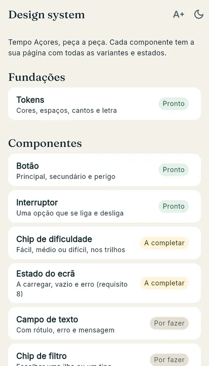
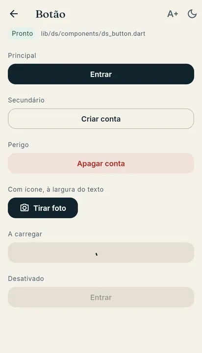
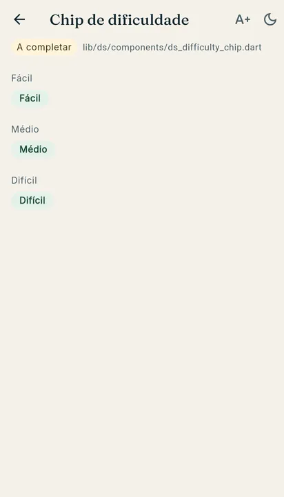
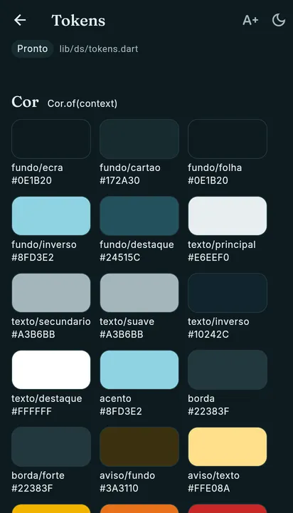

Aula 23 · Semana 10 · Terça, 10 de novembro de 2026 · 08:30 às 10:30
A app fora do ecrã, e o design system
Primeiro, o que acontece a uma app quando sai do ecrã, porque é que o sistema a trava, e as quatro formas de trabalhar lá fora, com apps que usas todos os dias. Um jogo. Depois, o design system do Tempo Açores, do Figma para o código, numa app catálogo com duas peças por acabar. No fim, a sprint 2: a próxima peça de cada grupo.
No fim desta aula consegues
Dizer o que acontece a uma app quando sai do ecrã, e quem decide.
Explicar porque é que o Android e o iPhone limitam o trabalho em segundo plano.
Escolher o mecanismo certo para um caso: tarefa agendada, serviço em primeiro plano, push ou notificação local.
Encontrar no código uma variable do Figma pelo nome, e usar um componente do design system em vez de cores e medidas soltas.
Levar a próxima peça do projeto do grupo por um PR até ao merge.
Sais da app: o que lhe acontece
Pergunta à turma Estás a meio de um formulário longo, vais ao WhatsApp e voltas uma hora depois. O que pode ter acontecido ao que escreveste?
Porque é que o sistema trava
Quatro formas de trabalhar fora do ecrã
Verde: a pessoa nem dá por ela. Amarelo: tem de estar à vista. Azul: aparece uma notificação.
Tocar na notificação: o ecrã certo
A ideia A notificação leva um caminho, e a app entrega-o ao router. Isto é um deep link: o WhatsApp abre a conversa, os CTT abrem a encomenda.
No Tempo Açores, e no Flutter
Jogo: qual é o mecanismo?
Um cenário de cada vez, todos ao mesmo tempo. Vota, discute com o colega do lado, vota outra vez.
Qual é o mecanismo? A turma
O design system em quatro camadas
Pergunta à turma: no vosso projeto, quantos sítios têm de mudar para trocar a cor de todos os botões?
Do Figma para o código: o mesmo nome
A barra desaparece e a palavra seguinte começa com maiúscula. Quem tem o Figma aberto encontra o nome no código sem traduzir nada.
Primitivas: a paleta em bruto, que os componentes nunca usam. Cor: para que serve cada cor, com os mesmos nomes no claro e no escuro.
Onde a magia acontece: Cor.of(context)
/// The colours of the current theme, light or dark.
static Cor of(BuildContext context) =>
Theme.of(context).brightness == Brightness.dark ? escuro : claro;
/// Collection "Cor", mode "Claro".
static const claro = Cor._(
fundoEcra: Primitivas.sand100,
fundoCartao: Primitivas.white,
fundoFolha: Primitivas.sand50,
// ...
Um componente pede Cor.of(context).acento e recebe a cor do tema em uso. O Cor.escuro, logo abaixo, é a coleção "Cor (escuro)". Espaços e cantos: Dimensoes.espacoMd, Dimensoes.raioLg.
No main.dart: theme: dsTheme(Brightness.light). A partir daí, cada FilledButton e cada Switch da app já sai com o design system.
Antes e depois: o botão
Abram o ds_button.dart: não há lá nenhuma cor, nenhum canto, nenhuma letra. O componente só escolhe qual dos botões do Material e o que vai lá dentro.
O catálogo: a app é o design system

A lista, com o estado de cada peça.

Uma página por peça, com as variantes.

O erro vê-se: tudo verde.

Os tokens, no escuro.
No topo, um botão aumenta a letra para 130 % e a lua passa ao tema escuro. Cada peça tem de ficar bem nos dois.
O repositório de hoje
git clone https://github.com/Tiago-Rocha/pdm-aula-23.git
cd pdm-aula-23
flutter pub get
flutter run -d chrome
Ficheiro
Onde a magia acontece
lib/ds/tokens.dart
As variables do Figma, com os mesmos nomes.
lib/ds/theme.dart
O tema do Material, feito com os tokens.
lib/ds/components/
Os componentes, sem cores escritas à mão.
lib/catalog/entries.dart
Cada peça do catálogo, com um exemplo por variante.
Duas peças por acabar
Chip de dificuldade
No catálogo, "Médio" e "Difícil" estão verdes, como "Fácil". As cores certas estão nas variables do Figma, nos grupos aviso e erro, e com os mesmos nomes no Cor.
Ficheiro: ds_difficulty_chip.dart
Estado do ecrã
O erro mostra a mensagem mas deixa a pessoa presa. Falta o botão "Tentar outra vez": um DsButton secundário, à largura do texto, que chama o onRetry.
Ficheiro: ds_state_view.dart
Depois, no projeto do grupo A pasta lib/ds passa para o lib/ do projeto, o dsTheme entra no MaterialApp, e os botões trocam-se por DsButton, um ecrã de cada vez.
Sprint 2: o que se vê nos repositórios
Faltam três aulas e a review A review é na quarta, 18 de novembro, às 16:00. Conta o que estiver no main, a correr no telemóvel.
Primeiro: o issue "Permissões"
Permissão
Quando se pede
Frase de razão
Se a pessoa disser não
Localização
Toque em "Onde estou?"
"Para mostrar a ilha mais próxima de ti."
O cartão explica e a lista continua.
Notificações
Ao marcar o primeiro favorito
"Para te avisar da previsão da tua ilha."
Os favoritos funcionam, sem avisos.
Uma foto da galeria
Ao criar um relato
Nenhuma: o seletor do sistema
O relato vai sem foto.
Dez minutos. Um issue no repositório do grupo, com o título "Permissões" e uma linha por permissão que a vossa app usa. Ninguém o tem ainda.
A próxima peça do vosso grupo
Hoje Primeiro, o que já está num branch ou num PR entra no main. Quem não tem o design system no main começa por aí: a pasta lib/ds do repositório de hoje é a peça. Os outros encontram-se no caminho: a primeira peça que ainda não está no main é a de hoje. Copiem do repositório indicado, adaptem, e levem-na por um PR até ao merge.
Até às 10:25: uma peça, um PR, um merge
Um branch com o nome da peça: git switch -c avisos.
Commits pequenos, cada um com a app a correr.
PR no GitHub, com um colega do grupo como revisor.
O colega abre o PR, deixa um comentário e aprova. Merge.
Todos fazem git pull no main.
Às 10:15 Cada grupo diz numa frase: que peça, e em que ponto está o PR.
Até amanhã
Amanhã
Quarta, 11 de novembro, das 16:00 às 18:00: hardware e sensores, e sprint 2.
A câmara e a galeria servem para a peça 7, os relatos com foto.
Tragam o PR de hoje com merge feito, e a app do grupo a correr no telemóvel.
Para quem quiser ler mais
Background tasks: o guia do Android para escolher entre WorkManager, serviços e alarmes.